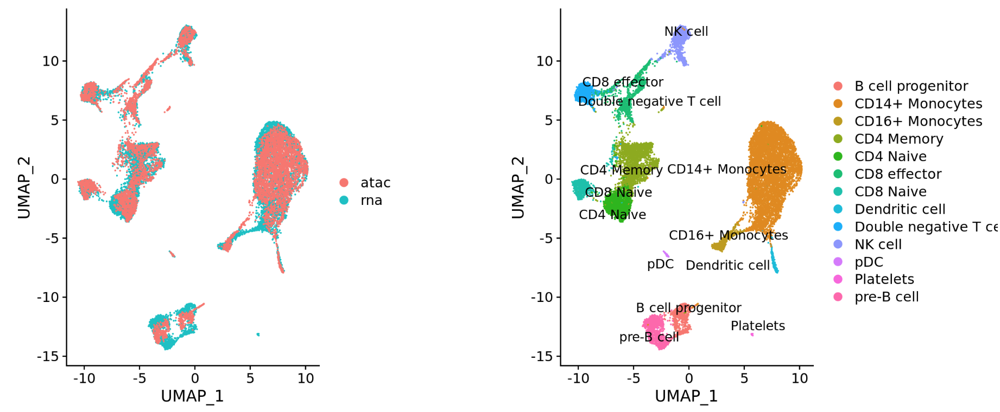

# Run UMAP
seurat_phase <- RunUMAP(seurat_phase,
dims = 1:40,reduction = "pca")
# Plot UMAP
DimPlot(seurat_phase) Single-cell RNA-seq: Integration
Approximate time: 90 minutes
Learning Objectives:
- Understand the theory of integration with CCA
Single-cell RNA-seq clustering analysis: Integration theory

Goals:
- To align same cell types across conditions.
Challenges:
- Aligning cells of similar cell types so that we do not have clustering downstream due to differences between samples, conditions, modalities, or batches
Recommendations:
- Go through the analysis without integration first to determine whether integration is necessary
To integrate or not to integrate?
Generally, we always look at our clustering without integration before deciding whether we need to perform any alignment. It can be helpful to first run through clustering with samples from different sample classes together to see whether there are condition-specific clusters for cell types present in both conditions. Oftentimes, when clustering cells from multiple conditions there are condition-specific clusters and integration can help ensure the same cell types cluster together.
Do not just always perform integration because you think there might be differences - explore the data. If we had performed the normalization on both conditions together in a Seurat object and visualized the similarity between cells, we would have seen in our dataset there is condition-specific clustering:

How do we create this UMAP?
The UMAP above can be generated by using the seurat_phase object from the previous lesson. For this object we have already run PCA, so the next steps would be to RunUMAP() and then plot, as shown in the code below.
Condition-specific clustering of the cells indicates that we need to integrate the cells across conditions to ensure that cells of the same cell type cluster together. If cells cluster by sample, condition, batch, dataset, modality, performing integration can help align cells across the groups to greatly improve the clustering and the downstream analyses.
Why is it important that cells of the same cell type cluster together?
We want to identify cell types which are present in all samples/conditions/modalities within our dataset, and therefore would like to observe a representation of cells from both samples/conditions/modalities in every cluster. This will enable more interpretable results downstream (i.e. DE analysis, ligand-receptor analysis, differential abundance analysis…).
In this lesson, we will cover the integration of our samples across conditions, which is adapted from the Seurat Guided Integration Tutorial.
Note
Seurat has a vignette for how to run through the workflow from normalization to clustering without integration. Other steps in the workflow remain fairly similar, but the samples would not necessarily be split in the beginning and integration would not be performed._
Example scenarios for integration
Different conditions (e.g. control and stimulated)
Different datasets (e.g. scRNA-seq from datasets generated using different library preparation methods on the same samples)

Different modalities (e.g. scRNA-seq and scATAC-seq) 
Different batches (e.g. when experimental conditions make batch processing of samples necessary)
Integration using CCA
Integration is a powerful method that uses shared highly variable genes from each group to identify shared subpopulations across conditions or datasets [Stuart and Bulter et al. (2018)]. The goal of integration is to ensure that the cell types of one condition/dataset align with the same celltypes of the other conditions/datasets (e.g. control macrophages align with stimulated macrophages).
The integration method that is available in the Seurat package utilizes the canonical correlation analysis (CCA); a method that expects “correspondences” or shared biological states among at least a subset of single cells across the groups. The result of this integration approach is a corrected data matrix for all datasets, enabling them to be analyzed jointly in a single workflow. To transfer information from a reference to query dataset, Seurat does not modify the underlying expression data, but instead projects continuous data across experiments.
The steps in the Seurat integration workflow are outlined in the figure below:
Image credit: Stuart T and Butler A, et al. Comprehensive integration of single cell data, bioRxiv 2018 (https://doi.org/10.1101/460147)
1. Identify shared variable genes:
Integration aims to take the matrix for each dataset (Ctrl and Stim) and identify correlated structures across them and align them in a common space. The shared highly variable genes from each dataset are used to form the intersection set, because they are the most likely to represent those genes distinguishing the different cell types present.
Each dataset can have a different number of cells, but must have the same number of genes.
2. Perform canonical correlation analysis (CCA):
Next, Seurat will jointly reduce the dimensionality of both datasets using diagonalized canonical correlation analysis (CCA) which is a form of PCA. Similar to principal components in PCA, the CCA will result in canonical correlation vectors. An L2-normalization is applied to the canonical correlation vectors, to use as input for the next step (identifying MNNs).
3. Find mutual nearest neighbors (MNNs) or anchors:
In this new shared low-dimensional space, Seurat will identify anchors or mutual nearest neighbors (MNNs) across datasets. These MNNs are pairs of cells that can be thought of as ‘best buddies’.
For each cell in one condition: - The cell’s closest neighbor in the other condition is identified based on gene expression values - its ‘best buddy’. - The reciprocal analysis is performed, and if the two cells are ‘best buddies’ in both directions, then those cells will be marked as anchors to ‘anchor’ the two datasets together.
4. Filter anchors to remove incorrect anchors:
Assess the similarity between anchor pairs by the overlap in their local neighborhoods (incorrect anchors will have low scores) - do the adjacent cells have ‘best buddies’ that are adjacent to each other? If not, these are removed the anchor list.
5. Integrate the conditions/datasets:
Using the anchors and corresponding scores the cell expression values are transformed, allowing for the integration of the conditions/datasets (different samples, conditions, datasets, modalities). For each cell in the dataset we now have an integrated value, but only for the variable features used for this analysis.
Note
Transformation of each cell uses a weighted average of the two cells of each anchor across anchors of the datasets. Weights determined by cell similarity score (distance between cell and k nearest anchors) and anchor scores, so cells in the same neighborhood should have similar correction values.
If cell types are present in one dataset, but not the other, then the cells will still appear as a separate sample-specific cluster.
Note
If there are a substantial number of cells that do not have a match between groups or there are a large number of cells to integrate, an alternative approach recommended by the Seurat vignette is reciprocal PCA (RPCA).